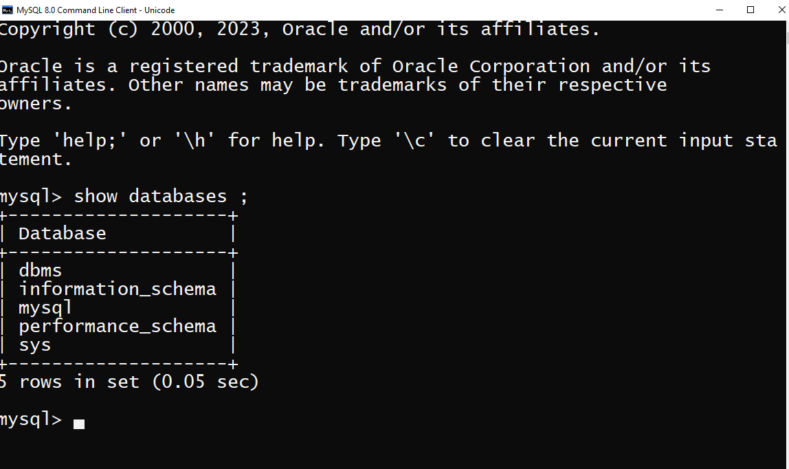

First of all, open the MYSQL command line client that appeared with a mysql prompt. Next,log in to the MYSQL
database server using the password that you have create during the installtion of MYSQL.Now, you can connected to the
MYSQL host.Finnally,run the SHOW databases command to show list of databases.
For see the existing databases in mysql we can use the show in MySQL command line client. Using this command all
the databases in MySQL are show in the table form.
show databases ;
How we can see existing databases in mysql?
Below output is show the answer of this query.
